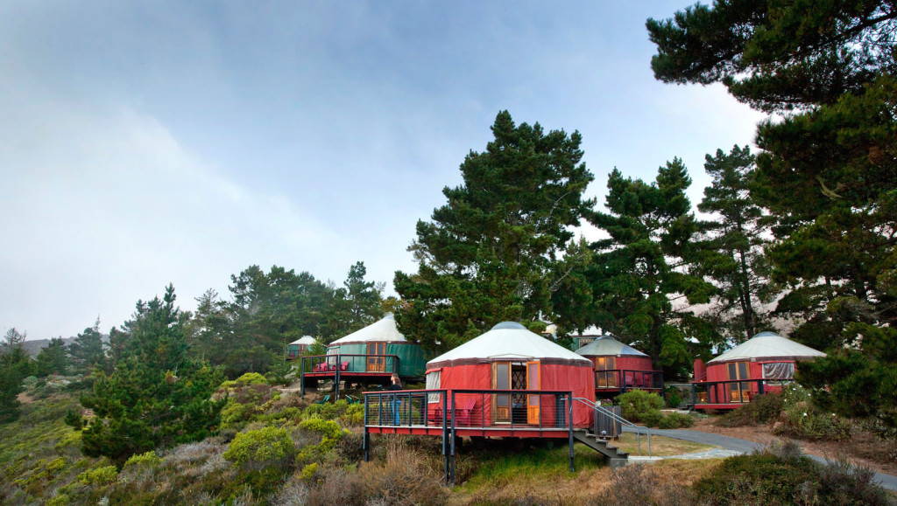

The Yurts at Pacific Trails
- What is a yurt?
- Our luxury yurts are permanent structures four feet off the ground. Each yurt is fully enclosed with canvas walls, a wooden floor, and a roof dome that can be opened.
- How are the yurts furnished?
- Each yurt is furnished with a queensize bed with down quit and gas-fired stove. Your luxury camping experience includes electricity and a sink with hot and cold running water. Shower and restroom facilities are located in the lodge.
- What Should I bring?
- Most guests pack comfortable walking shoes and plan to dress for changing weather with light layers of clothing. It is also helpful to bring a flashlight and a sense of adventure!